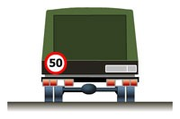

Водитель должен вести транспортное средство со скоростью, не превышающей установленного ограничения, учитывая при этом интенсивность движения, особенности и состояние транспортного средства и груза, дорожные и метеорологические условия, в частности видимость в направлении движения. Скорость должна обеспечивать водителю возможность постоянного контроля за движением транспортного средства для выполнения требований Правил. При возникновении опасности для движения, которую водитель в состоянии обнаружить, он должен принять возможные меры к снижению скорости вплоть до остановки транспортного средства.
В населенных пунктах разрешается движение транспортных средств со скоростью не более
60 км/ч, а в жилых зонах и на дворовых территориях не более 20 км/ч.
соответствующих видов транспортных средств на автомагистралях.
Вне населенных пунктов разрешается движение:
легковым автомобилям и грузовым автомобилям с разрешенной максимальной массой не более
3,5 т на автомагистралях — со скоростью не более 110 км/ч, на остальных дорогах — не более 90
км/ч;
междугородним и маломестным автобусам и мотоциклам на всех дорогах — не более 90 км/ч:
другим автобусам, легковым автомобилям при буксировке прицепа, грузовым автомобилям с разрешенной максимальной массой более 3,5 т на автомагистралях — не более 90 км/ч, на остальных дорогах — не более 70 км/ч;
грузовым автомобилям, перевозящим людей в кузове, — не более 60 км/ч;
транспортным средствам, осуществляющим организованные перевозки групп детей, — не более
60 км/ч.
Транспортным средствам, буксирующим механические транспортные средства, разрешается движение со скоростью не более 50 км/ч.
Транспортным средствам, перевозящим крупногабаритные, тяжеловесные и опасные грузы, разрешается движение со скоростью, не превышающей скорости, установленной при согласовании условий перевозки.
Водителю запрещается:
превышать максимальную скорость, определенную технической характеристикой транспортного средства;
превышать скорость, указанную на опознавательном знаке “Ограничение скорости”, установленном на транспортном средстве;
создавать помехи другим транспортным средствам, двигаясь без необходимости со слишком малой скоростью;
резко тормозить, если это не требуется для предотвращения дорожно-транспортного происшествия.
